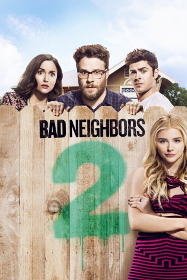

gesehen am 14.09.2016
gesehen am 14.09.2016Alternativ: Neighbors 2: Sorority Rising gesehen am 14.09.2016
 
 IMDB-Wertung: 5.8 / 10
IMDB-Wertung: 5.8 / 10  Metascore:
Metascore: 
Endlich haben es Mac und Kelly Radner geschafft: Töchterchen Stella schläft längst durch, ein zweites Baby ist unterwegs und in der Nachbarschaft ist wieder Ruhe eingekehrt. Der ideale Zeitpunkt also, um den nächsten Schritt Richtung gepflegte Bürgerlichkeit zu tun. Doch gerade als sie ihr Haus verkaufen und in die Vorstadt ziehen wollen, hält nebenan plötzlich wieder eine Studentenverbindung Einzug. Und die Mädels von Kappa Nu lassen Teddy und seine Jungs im Rückblick fast wie Traumnachbarn erscheinen. Die Radners haben nur eine Chance, wenn sie die unliebsamen Störenfriede loswerden und damit den Marktwert ihres Hauses retten wollen: Sie bitten ihren Ex-Rivalen Teddy um Mithilfe. Sein charmantes Lächeln und die gestählten Bauchmuskeln sollen die Party-Bitches stoppen. Doch jung und verrückt wie sie sind, geben sich Shelby und Co. nicht so schnell geschlagen.
Jahr: 2016
Dauer: 92 Minuten
FSK: 12
Land: USA Studio: Universal PicturesTonspuren: DTS - ,
Untertitel: Deutsch,
Auflösung: 1080p (1920x800) Größe: 4526 MB
Genre: Komödie
Regisseur: Nicholas Stoller
Drehbuch: John Cohen
Soundtrack:
Darsteller:
 Seth Rogen als Mac Radner
Seth Rogen als Mac Radner Zac Efron als Teddy Sanders
Zac Efron als Teddy Sanders Rose Byrne als Kelly Radner
Rose Byrne als Kelly Radner Chloë Grace Moretz als Shelby
Chloë Grace Moretz als Shelby Ike Barinholtz als Jimmy
Ike Barinholtz als Jimmy Kiersey Clemons als Beth
Kiersey Clemons als Beth Dave Franco als Pete
Dave Franco als Pete Jerrod Carmichael als Garf
Jerrod Carmichael als Garf Christopher Mintz-Plasse als Scoonie
Christopher Mintz-Plasse als Scoonie Clara Mamet als Maranda
Clara Mamet als Maranda Selena Gomez als Phi Lambda President
Selena Gomez als Phi Lambda President Hannibal Buress als Officer Watkins
Hannibal Buress als Officer Watkins Carla Gallo als Paula
Carla Gallo als Paula John Early als Darren
John Early als Darren Kyle Mooney als R.A.
Kyle Mooney als R.A. Lisa Kudrow als Dean Carol Gladstone
Lisa Kudrow als Dean Carol Gladstone Ian Gregg als Second Frat Guy
Ian Gregg als Second Frat Guy Liz Cackowski als Wendy the Realtor
Liz Cackowski als Wendy the Realtor Kelsey Grammer als Shelby's Dad
Kelsey Grammer als Shelby's Dad Sam Richardson als Eric Baiers
Sam Richardson als Eric Baiers Billy Eichner als Oliver Studebaker
Billy Eichner als Oliver Studebaker Brian Huskey als Bill Wazakowski
Brian Huskey als Bill Wazakowski Ciara Bravo als Sorority Girl
Ciara Bravo als Sorority GirlDatei: X:\2-Dilogie(A-F)\Bad Neighbors\Bad Neighbors 2 (2016, FSK12, 1920x800).mkv seit 12.09.2016
Festplatte: HD Collection-2(A-Z)-3(A-M)
 Alle Filme aus Gruppe '2-Dilogie(A-F)\Bad Neighbors'
Alle Filme aus Gruppe '2-Dilogie(A-F)\Bad Neighbors'